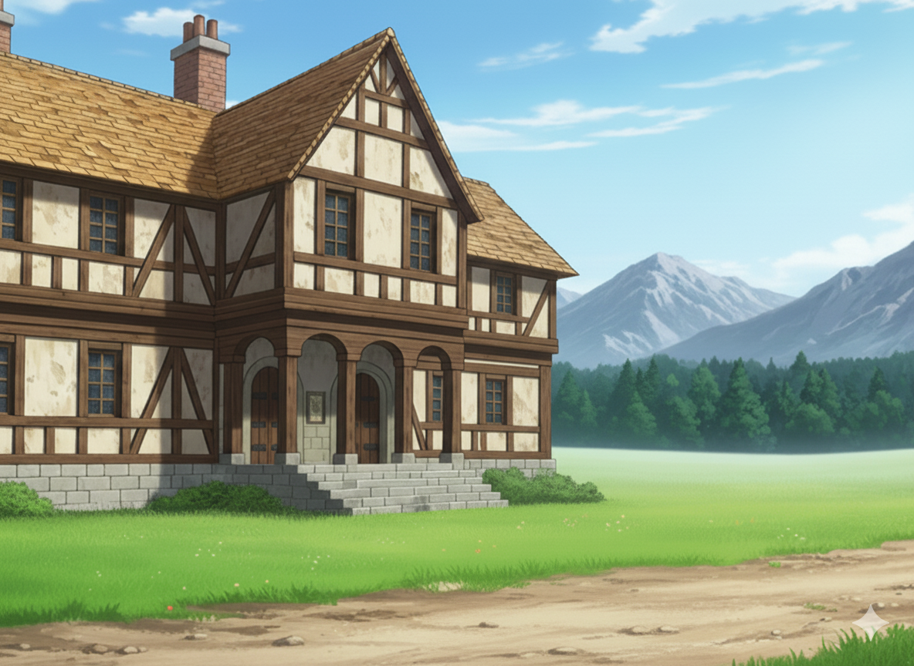
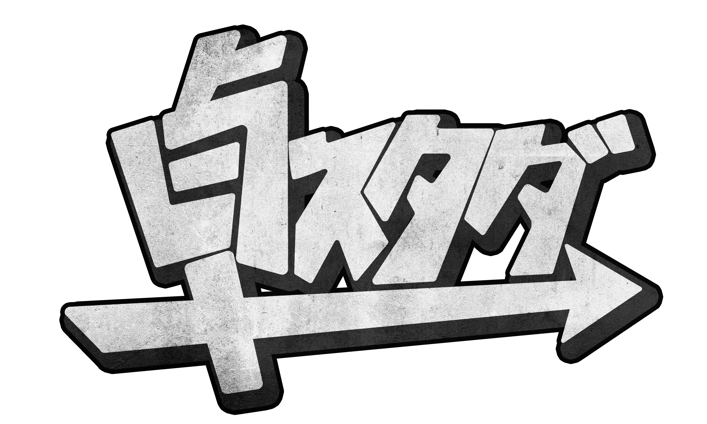
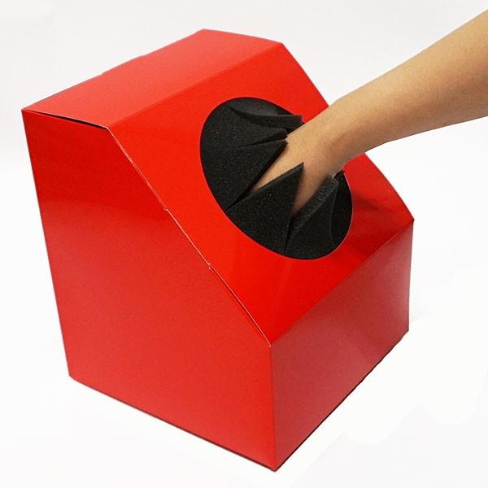
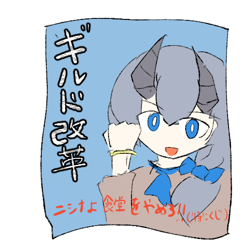
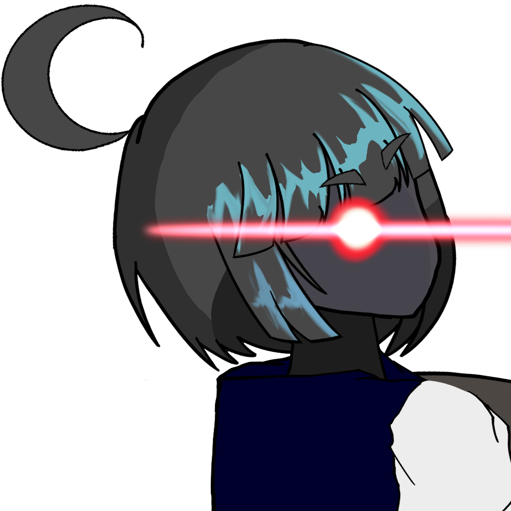
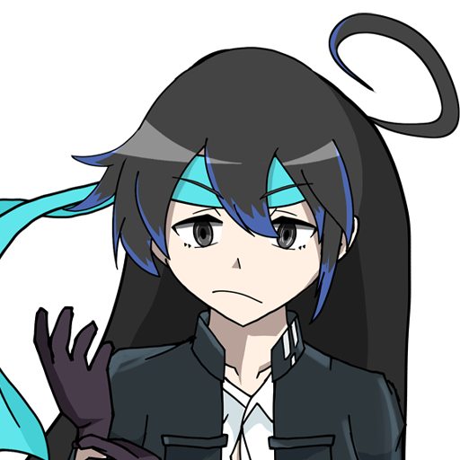

1冒険者登録
- 受付で登録書類に必要事項を記入します。
- 記録用の顔写真をマナカメラで撮影します。
- 職員の確認が終われば、正式に冒険者として登録完了です。
登録条件や必要書類など、事情のある方は受付へご相談ください。
 帝国の鉢巻
帝国の鉢巻
営業・利用案内
営業中
私たち「帝国の鉢巻亭」は、港湾都市ハーヴェスの南側に広がる郊外、街の外れに拠点を構える冒険者ギルドです。冒険者ギルド本部にも正式に登録されており、冒険者登録や正規依頼の仲介、功績の記録などを行っています。必要な手続きは、ええ、ちゃんとやっていますよ。日々の運営は……まあ、だいぶ大らかですけど。
中心街からは少し離れていますが、そのぶん広々としていて、大がかりな訓練や魔動機の整備にも便利なんですよ。「帝国」というのは、将来それくらい大きな存在になろう、という目標から付けた名前なんだそうです。「鉢巻」は、もちろんニシナさんのトレードマークですね。ギルドマスター「ミカ・ニシナ」さんの指揮のもと、ベテランから私みたいな新人まで、色々な冒険者さんが集まって、毎日いろんな依頼に挑んでいます。
蛮族討伐や魔物退治はもちろん、地下水道の調査や異端審問、時にはギルド直営の食堂のお手伝いまで、本当に幅広い依頼を扱っているんですよ。それに、他のギルドとの対抗戦にも積極的に参加するなど、結構武闘派な一面もあるみたいです。
それに、最近はたくさんの新人冒険者さんが来てくれて、ギルドはとっても賑やかですねぇ。でもその一方で、ニシナさんのサービス精神が旺盛すぎて、経営はいつも赤字だって聞いてます…。大丈夫なんでしょうか、このギルド……。
「帝国の鉢巻亭」は、比較的最近、ミカ・ニシナさんと、ポポロ・リックさん、ファラージさん、ラズヒェル・リリベラードさんたちによって設立されました。最初からギルドだったわけではなく、皆さんはもともと同じパーティで冒険していた仲間です。
現在、ポポロさんとリリさんはニシナさんと一緒に共同経営とギルドの仕事を担っています。ただし、二人とも必要があれば冒険へ出ます。ファラージさんは普段のギルド運営には入らず、今も冒険者として活動中です。つまり創立メンバーは、誰も引退していないんですよ。
現在の建物は、パーティで貯めた共同資金を使ってニシナさんが購入したものです。地下に魔動機文明時代の遺跡があることは購入前から分かっていて、「拠点を持つついでに、遺跡も調査できたら」というくらいの考えだったそうですよ。
もっとも、当時の建物はそのまま酒場や宿にできるような状態ではなく、かなり傷んでいました。そこで購入後に大がかりなリフォームを行い、受付や酒場、宿泊設備を備えた現在の形へ整えたんです。共同資金の使い方としては、ずいぶん派手だったらしいですけど……ほかの皆さんが、どの段階でどこまで賛成していたのかは、記録がはっきりしないんですよねぇ。

冒険者登録から依頼達成後の精算まで、基本的な流れをご案内します。分からないことは受付で聞いてくださいね。最初から全部覚えてこなくても大丈夫ですよ～。
登録条件や必要書類など、事情のある方は受付へご相談ください。
職員が実力や実績を確認し、別の依頼をご案内する場合もあります。お一人で来られた方には、実力の近い冒険者さんをご紹介して、臨時のパーティを組むお手伝いもしています。特に新人さんは、遠慮なく相談してくださいね。
依頼になかった危険を解決した場合などは、確認のうえ追加報酬が出ることもあります。報告は詳しくお願いします～。
通常の受付は早朝から夜まで行っています。宿と酒場を兼ねていますので、完全に閉店する時間は原則ありません。深夜の帰還や緊急のご用件は、当直の職員が可能な範囲で対応いたします。遠征、施設の修繕、予期せぬ事故などで臨時休業や一部施設の利用停止が発生することはありますので、ご了承ください。
なお、冒険者ギルド本部へ通達される「正規ルート」の依頼は、受注状況も本部と共有されます。一度引き受けた依頼を放置するのは、絶対にやめてくださいね。
遠方への依頼では、契約内容に応じて旅費、現地の地図、保存食、消耗品などが支給されるほか、馬車や船、飛空艇などの移動手段をギルド側で手配する場合があります。毎回すべて付いてくるわけではありませんので、出発前に受付でご確認ください。
私たちは、冒険者の皆さんの自由な活動を尊重しています。ですから、厳しくて細かいルールで皆さんを縛るつもりはありません。でも、全員が気持ちよくギルドを利用するために、いくつか心に留めておいてほしいことがあるんです。
お仕事の受注や、達成した後の報告は、必ず受付カウンターにいる私たちギルド職員にお願いしますね！皆さんの功績を、しっかり記録させてください。
依頼書に書かれている報酬額は、冒険者の皆さんの手取り額です。ギルドへの手数料などは、ニシナさんが裏でうまくやってくれている（はずな）ので、皆さんが気にする必要はありません。書かれている金額を、そのままお渡ししますので、ご安心ください！
ギルド内での私闘は、もちろん禁止です。もし何かトラブルがあったら、私たち職員か、ギルドマスターに相談してください。…ただ、どうしても拳で語り合いたい！という場合は、お互いの合意の上で、訓練場を使ってくださいね。大怪我だけはしないでくださいよ！
街での振る舞いには、少しだけ気をつけてくださいね。皆さんは「帝国の鉢巻」の看板を背負う、誇りある冒険者です。周りの人に迷惑をかけて、ギルドの評判を落とすようなことだけは、しないでくれると嬉しいです。不名誉点にも響いてくるので……
高難易度の依頼に挑むときは、なるべくパーティを組むことを強くお勧めします。もちろん、ソロで挑戦する腕利きの先輩もいますが、その場合はすべて「自己責任」ということになりますから、準備は万全にお願いしますね！
ギルドの片隅に時々出没するあのジンという男ですが、彼の行動は予測不能です。時として大きなトラブルに発展したり、冒険者さん同士の揉め事に気まぐれで介入して、結果的にそれが解決のきっかけになる…ということも、稀にあるかもしれません。
しかし、一番注意していただきたいのは、彼から直接持ちかけられる「面白い話」や「ちょっとした探検」です。
彼の口約束や提案を鵜呑みにしないことを、強く、つよーーく推奨します。彼の誘いに乗って何か問題が起きても、ギルドは一切の責任を負いかねますので、全て自己責任でご判断ください。…本当に、面倒なことだけは起こさないでほしいんですけどね…。はぁ…。
| 順位 | 名前 | ターン数 | 討伐本数 |
|---|
GUILD ARCHIVE
当ギルドで受注・仲介した依頼の報告書です。冒険者さんたちの功績と、次の依頼に役立つ記録を保管しています。
達成した依頼の報告書は、冒険者さんたちの功績がちゃんと目に見えるように、っていうニシナさんの方針でギルドの大きい青いファイルにファイリングされています。ここではその一部を掲示しています。全ての報告書はギルドで閲覧できますので、興味のある方はお声がけくださいね～。
START-DASH ACTIVITY ARCHIVE
「卓スタダ」を通して、登録された新人さんたちが受けた依頼を、受付記録の順にまとめました。調査、聞き込み、護衛、蛮族や奈落への対処まで、ずいぶん仕事の幅が広かったんですねぇ。
GUILD DAYBOOK
繁忙期の受付では、印章を探したり、ファラージさんに手伝ってもらったり、積み上がった書類がなぜか燃えたりしていました。燃やした方は「処理した」と主張していましたが、ポポロさんには通じませんでした。当然です。
そこへ“記者探偵”レイチェル・フォードさんが取材に来訪。さらに他ギルドの冒険者さんたちが、勝てば看板をもらうという条件で模擬戦を申し込みました。ニシナさんたち創立メンバーも応戦し、看板は無事でした。挑戦者の皆さんには、その後の書類仕事を手伝っていただきました。
騒ぎのあとも、ニシナさん、リリさん、ポポロさんたちは「まだ冒険を続けたい」と話していました。帰還後の食卓には、ジンがサーモンのムニエルを出してくれたそうです。普段のポテトとルートビア以外が出る日も、まあ、あるんですよ。
この日に持ち込まれた正体不明の遺物は、後日の検討資料へ回されています。現在使える施設ではありませんので、勝手に起動しないでくださいね。
「帝国の鉢巻 特別訓練魔域（仮）」
――将来構想のお知らせ――
過去の依頼データに基づく、擬似的な魔域での訓練施設をニシナさんが構想中です！
まだ利用はできませんので、完成までしばらくお待ちください。……予算、大丈夫なんでしょうか。
ギルドマスターの発案で始まった、新人冒険者さん向けの特別キャンペーンです！
これは将来ギルドの戦力を向上させるための投資らしく、新人さんは無料で様々なアイテムが当たるくじ引き（スタダボーナス）に挑戦できるんですよ。ニシナさん曰く「赤字覚悟！出血大サービス！」とのことで、時にはライフォス神殿のような外部の組織と連携して行われることもあるみたいです。
これまでには「陽光の魔符」や「酒の種」、「スモークグラファー」といった珍しい品々が出たという記録も残ってるみたいですけど…。
（予算、本当に大丈夫なんですかね…）

キャンペーンに対応している依頼には、このロゴが付いてるみたいなので、チェックしてみてくださいね！見逃しちゃダメですよ～！

こ、怖い…！何が出るかは開けてのお楽しみ、だそうです…。私、こういうの苦手なんですよねぇ。
実際に試してみましょうか…

「ギルドの財政は常に火の車と聞く。この過剰なサービスは、我々の報酬から不当に捻出されているのではないか？」…なんて書かれたビラがギルドの隅に落ちてました。ニシナさんの浪費癖が、ついに一部の冒険者さんの不満を買っちゃったみたいですね…。はぁ、心配です…。
最近では、「ギルドに蛮族が紛れ込んでいるんじゃないか」なんてウワサも耳にします。そういえば、この間ギルドのことをやけに詳しい蛮族に会った、という話も聞きました。私が受付にいる時には、そんな方はいなかったと思うんですけど…気のせいですかねぇ。
以前、冒険者さんたちが捕まえた詐金神メイガルの神官、ワルーサが逃げ出したっていうウワサです。なんでも、前より美味しくなって再登場ってクチですか？まったく、神殿も警備が甘いからこういうことになるんですよ。また面倒な依頼が増えそうですねぇ…。

最近、悪人ばかりを狙って斬りつけている「人斬りセーラー」を名乗る、物騒なヴァグランツが現れたそうですよ。一部では義賊なんて呼ばれているみたいですけど、やり方が過激すぎますよね…。しかも、その人がニシナさんの妹なんじゃないかっていうウワサまであるんです。た、確かに、どことなく雰囲気が似てるような気もしますけど…まさか、ねぇ…。
最近、冒険者さんたちの間で「"記者探偵"レイチェル・フォード」と名乗る、不思議な女性の目撃情報が増えているんです。なんでも冒険者の活躍を嗅ぎつけては、ドラゴンに乗ってどこにでも現れるだけでなく、時には全く違う場所で、ほぼ同時に目撃されることもあるとか…。彼女に見初められると、いきなり熱烈な取材が始まるみたいですよ。
彼女の記事に載ると、その冒険者の知名度は遠い地方中に知れ渡ると言われていて、新人さんにとっては大きなチャンスになるかもしれません。ただ、彼女自身も相当な腕利きで、取材のためなら危険な場所にも平気でついてくるそうです。…その取材に付き合っているうちに、いつの間にかとんでもない事件に巻き込まれていた、なんて話も聞きますので、関わる時は少しだけ覚悟がいるかもしれませんね！
最近、腕に覚えのある冒険者さんたちの間で、「"鉢巻四天王"に挑戦して、自分の実力を示したい！」なんて声が囁かれているの、ご存知ですか？ ギルドでも特に強いと言われる、ニシナさん、リリさん、ポポロさん、の3人に、あと一人…「謎の凄腕」を加えた4人に模擬戦を挑む「四天王トライアル」が、いつか開催されるんじゃないかって…。 もちろん、まだただのウワサですけど、もし本当に実現したら、ギルド中が盛り上がるでしょうね！我こそは、という方は今のうちから腕を磨いておくといいかもしれませんよ？
ウワサでは、腕利きの冒険者さんたちが有志で、不定期に談話室なんかを貸し切って、特別な競売会（オークション）を開いているらしいんです。開催はいつも突然で、その日にギルドに居合わせた幸運な人だけが参加できるとか…。
出品されるのは、冒険者仲間からの預かり品や、ギルドの地下遺跡から偶然発掘されたものなど、普通の市場にはまず出回らない珍品ばかりだそうです。もし運良くその場に居合わせることができたら、一生モノの掘り出し物に出会えるかもしれませんね！
酒場で冒険者さんたちが話しているウワサを、こっそりまとめてみました。信じるか信じないかは、あなた次第ですよ…？
もっと詳しい情報や、実際に使った表なんかが気になる方は、ギルドの書庫にある記録用のファイルを覗いてみてくださいね。
はい、もちろんです！ランクが上がると、より難しくて報酬の高い依頼を受けられるようになります。ギルド施設の優先利用や、時にはギルドマスターからの特別な名指し依頼が舞い込むこともありますよ。高ランクの方だけが挑戦できる「ヒドラ討伐ソロ」のような依頼も掲示されますので、腕を磨く大きな目標になると思います！
まずは私のようなギルド職員が仲裁に入ります。それでも収まらない場合は…なぜかジンさんが現れて場をかき回したりしますが、最終的にはギルドマスターやベテラン冒険者の方々が場を収めてくれます。正式な決闘制度はありませんが、当事者同士が納得の上で「訓練場で模擬戦をして、スッキリした方がお酒をおごる」という形で解決することは、たまにあるみたいですね。
私たちのギルドは、ハーヴェス南郊の街外れにぽつんと建っていて、実はちょっと変わった造りをしているんですよ。 皆さんが普段利用する酒場や受付のあるエリアは、温かみのある木造なんですが、ギルドの奥の方…特にギルドマスターの私室のあたりは、全く雰囲気が違うんです。
あの部分は、継ぎ目のない不思議な鉄でできていて、実は魔動機文明の頃に造られたオーパーツなんですって！ 元々はほとんど遺跡同然だったのを、ニシナさんがリフォームして今の形にした、と聞いています。
なので、このギルド自体、その古代の遺跡を調査するために、後から木造の部分を建て増ししてできた、っていうのが始まりらしいですよ。だから、鉄でできたハイテクな遺跡に、温かい木の酒場がくっついている、っていう不思議な光景が広がってるんです。壁の一部にはツタも絡まっていますし、他にはない、独特の雰囲気だと思います！
私は事務員です！内勤です！…と言いたいところですが、人手不足の際は駆り出されることもあります。
その際は、ジオグラフ片手に全力で抵抗（物理）させていただきます。
…はい、事実です。ニシナさんはマギスフィアを爆発させたり、パイルバンカーを撃ったりと、とても派手な戦い方をされます。
そのたびに補充費用が発生して…経理担当としては頭が痛いです。街で見かけたら、あまり刺激しないでくださいね、本当にお願いします。
おそらく、ギルドの近くにある古い遺跡か、あるいは誰かがまた怪しい魔術の実験をしているのかもしれません。「触らぬ神に祟りなし」です。
変な声が聞こえても、決して近づいたり、一緒に歌ったりしないことをお勧めします。（精神衛生上よくないので…）
当ギルドでは、普通の知名度や冒険者ランクとは別に、個人の戦闘能力や依頼達成への貢献度を総合的に評価する独自の指標（1～15段階）を設けているみたいです。これのおかげで、それぞれの実力に合った依頼を紹介しやすくなってるんですね。ちなみに、今ギルド内で最高段階に到達している冒険者さんはいるみたいですけど、まだ誰も到達したことがない16段階目に到達した人はいないそうです。いつか現れるんでしょうかねぇ…！
最近特に活躍が目覚ましい冒険者さんたちを、ギルド受付のゾロメが独断と偏見でピックアップ！次なる伝説を作るのは、この中の誰かかも…？

人間 / ギルドマスター
「帝国の鉢巻亭」の設立者であり、ギルドマスターです。遠い遠い地方地方のご出身で、ギルドを構える以前から各地を巡ってきた冒険者でもあります。今も現役を退いたつもりはないらしく、書類仕事が続くと「体を動かしたい」と言い出して、自分で依頼や模擬戦へ出ようとすることがあります。
普段はギルド全体の方針を決め、依頼の取りまとめや冒険者さんたちの面倒を見ています。新人さんにも物怖じせず声をかけ、困っている人がいれば先に手を差し伸べる方です。受付や共同経営者の皆さんへ仕事を任せる一方、ご本人も現場へ出ようとするので、書類の決裁と冒険の予定がぶつかることもしばしばあります。ギルドマスターには収まっていますけど、根っこのところは今も冒険者なんでしょうね。
新人向けの道具配布やキャンペーンを次々に始め、酒場や食事のサービスにも力を入れてくださる、とても気前の良い方です。ただし利益をあんまり考えておらず、そのサービス精神が赤字の主な原因だと伺っております。ほかの共同経営者さんたちは、ニシナさんの思いつきで仕事と経費が増えるたびに止める側へ回っています。本当に、もう少し相談してから始めてほしいですねぇ……。
戦闘面では、マギスフィアを爆発させたり、パイルバンカーを放ったり、マテリアルカードを大量に使ったりと、経費を顧みないド派手な戦い方をされます。ポポロさんの計算では、ニシナさんが本気で一度戦うと一万ガメルほど飛ぶそうです。その実力が頼りになることは間違いないんですけど、皆さんが前線に出さないよう苦労しているのは、危険だからというより帳簿を守るためなのかもしれません。
ナイトメア / 共同経営者・魔動機技師
ギルドの設立に携わり、現在は共同経営と職員業務も担っている優秀な魔動機技師です。皆からはリリさんって呼ばれているようですね～。遠い地方地方のご出身で、昔はニシナさん、ポポロさん、ファラージさんたちとパーティを組んで冒険を共にされていたそうです。
地下の工房で、冒険者さんが持ち込む魔動機の修理や改造を一手に引き受けています。自身の発明品のテストを依頼してくることもありますし、時には自作の便利な道具を譲ってくださることもあるみたいですよ。共同経営者として書類の決裁も担当されていますが、忙しい時には印鑑ごと他の職員へ預けていることがありますので、急ぎの書類は受付で担当者を確認してください。
かなり歯に衣着せぬ方で、突然やってきた取材やニシナさんの思いつきには、容赦のない言葉を返されます。ただ、それでも必要な仕事や戦闘にはきっちり参加してくださるんですよね。今でも冒険者を引退したわけではなく、ギルドへ模擬戦を挑んできた方々を相手にした際は、カービンの砲撃と連射で前衛を一気に制圧したそうです。最後は投石だけで決着をつけたとか。二丁拳銃を使う時もあるそうですし、工房の技師だから後方担当だろう、とは思わないほうがよさそうです。
グラスランナー / 共同経営者・先輩冒険者
ギルドの設立に携わり、現在は共同経営と職員業務を担いながら、新人冒険者の案内役を務めることが多い、面倒見の良い先輩です。マカジャハットのご出身で、ニシナさんやリリさん、ファラージさんたちとは同じパーティの仲間だったとか。
掲示板の前で迷っている新人さんへ声をかけ、希望する仕事、想定される魔物、依頼人の性格、報酬まで見比べて、実力に合った依頼を勧めてくださいます。依頼の受理やスタートダッシュキャンペーンの道具配布を担当することもあります。ただ、景品箱を紹介する時の口上が妙に胡散臭く聞こえるらしく、本当に無料なのに詐欺を疑われていたことがありました。ご本人の善意とギルドマスターの赤字覚悟によるものですので、そこは信じてあげてくださいね。
普段は軽い調子ですけど、書類を燃やす人や仕事を増やすニシナさんを止める側に回ることが多く、共同経営者の中ではかなり現実的な方です。ニシナさんが本気で戦うと一度に一万ガメルほど飛ぶ、と具体的に叱っていた記録もあります。冒険者を引退したわけではなく、斥候としての腕は一流です。回避しながら相手を引きつけ、投擲武器と挑発攻撃を使って戦うため、新人さんの案内役だから戦闘も穏やかだろう、とは思わないでくださいね。
ルーンフォーク？ / ギルド職員
依頼の審査や受付を担当されている、とても親切な職員さんです。冒険者さんの実力と実績を見て、受けられる依頼を判断したり、危険性や条件を説明したり、帰還後の報告と精算まで取りまとめてくださいます。希望者が条件を満たしていない場合も、ただ断るだけではなく、その場で実力に合う別の依頼を掲示板から選んで渡してくださるんですよ。
遺跡、魔動機文明、浮遊大陸などの知識にも詳しく、未知の警備魔動機が残る可能性や、戦利品の買い取り条件まで含めて説明されます。説明は冷静で正確なんですけど、「コロッサスがいた場合は十秒ほどで死亡することも珍しくありません」みたいなことを同じ調子でおっしゃるので、聞いている側が後から怖くなることがありますね。
ギルドの中ではかなりの古株で、ほとんどの冒険者さんが「初めてギルドに来た時からいた」って言ってます。無表情のまま冗談を言うこともありますし、自由すぎる依頼人や職員の私物にはかなり厳しいです。以前、絶対に損傷させないでほしいと念を押した浮遊大陸が海へ沈んだ時には、三日ほど泣きながら仕事をしていたそうです……。それでも受付を止めなかったあたり、本当に責任感の強い方なんでしょうね。ウワサでは、いざという時には強力な武器で戦闘支援もしてくれる、とっても頼りになる方らしいですよ。
ルーンフォーク？ / ギルド職員
ポラリスさんの妹さんで、帳簿や依頼書類、受付時の映像記録、遠征中の通信管理、帰還後の報酬精算といった裏方のお仕事を担当されています。マギスフィアに残した依頼人の映像を冒険者さんへ見せたり、聞き込み用の似顔絵を描いたりするほか、戦利品の買い取りまで手際よく進めてくださいます。
魔動機の扱いにもかなり詳しく、市販の通話のピアスを改造して使用時間の制限をなくしたり、通信が途絶えた遠征隊をギルドから支援したりしたこともあります。修理の相談も受けているそうで、本人いわく「トースターとか直せますよ」とのことです。どこまで直せるんでしょうね。
とっても明るくてお喋り好きなんですけど、そのせいで冒険者さんと話し込んで仕事が進まなくなるから、と裏方に回された…なんてウワサもあります。お掃除は少し苦手らしく、ポラリスさんに叱られている姿もたまに見かけますね。普段は軽い調子ですけど、遠征隊と二日も連絡が取れなくなった時には本気で心配していたそうです。皆さんが顔を合わせる機会は少なくても、旅先から聞こえる声には、ちゃんと気を配ってくださっていますよ。
メリア / ギルド職員
冒険者登録や新人さんの案内、スタートダッシュキャンペーンの説明などを担当されている職員の方です。新人さんへ配る冒険道具の抽選箱を抱えて現れ、サングラスから〈迷わずのチョーク〉、〈悪魔の血盤〉、酒の種まで、当たった品の使い方をひとつずつ説明してくださったこともあります。変わった品物にも詳しく、受付職員として冒険道具の知識はかなり頼りになりますよ。
明るく気さくな方ですが、「新人さんが31人も増えたので、ぶっちゃけ大赤字です」と普通に話してしまうくらい率直なところがあります。キャンペーンの案内だけでなく、掲示板から新人向けの初仕事を選んで勧めるなど、冒険者さんが最初の一歩を踏み出すところまで面倒を見てくださいます。
ご本人は「結構レアキャラ」とおっしゃっていますので、受付で会えた方は少し運がいいのかもしれません。グミキノコ風の受付ということになっているらしいですが……親切に対応してくださいますよ。
人間 / 事務員 (新卒)・天地使い
ギルドの事務員を務めております、ゾロメ・ベストマンです。魔法学園を卒業して、最近ギルドに入ったばかりの新卒です。依頼の受付や契約書、記録管理、報酬の支払いのほか、予算管理や物資調達も担当しております。最近、あのジンとかいう変なのに無理やり変な魔域探索に付き合わされて、冒険者デビューも果たしました…。実務経験はまだ浅いですが、精一杯頑張りますので、どうぞよろしくお願いいたします～。あ、あと、天地使い…ジオマンサーっていうのもやっています。まだまだ半人前ですけど、いつか皆さんのお役に立てるように頑張りますね！
種族不明 / ギルド職員（アルバイト）
最近働き始めたアルバイトの方で、ご本人から「気さくにまりちゃんって呼んで」と言われています。依頼の掲示や受付、契約書の作成、パーティ編成、支給品の準備、報酬の精算に加えて、酒場の給仕まで幅広く担当されています。各地方の地理や遺跡、魔物、珍しい食材にも妙に詳しく、遠征先の地図を用意したり、冒険者さんの希望に合わせて機内食を揃えたりもしてくださるそうです。
……それだけなら、とても仕事のできる方なんですけどね。なぜアルバイトの方が私物の飛空艇を持っていて、それを依頼の送迎に出せるんでしょうか。「覚えておくといいことがある」とも言われましたけど、何があるのかは教えてくれませんでした。聞いても普通に流されます。なんなんですかねぇ、もう……。
ウィークリング / ギルド職員 (バイト)
最近ギルドで働き始めた、名前を教えてくれない職員さんです。突発的な出来事に弱く、「私なんてゴミなので…」とすぐに自分を卑下してしまう、すごく自己評価の低い方です。ですが、給金のためならと必死に業務に取り組む真面目さもあって、ギルドの財政状況を常に心配してくれています。
戦闘面では、体をギルドに置いたまま幽体で戦うという、非常に特殊な戦い方をされるようです。以前、単独でヒドラを討伐した実績もあり、その実力は計り知れません…。……いつか名前を教えてくれる日は来るのでしょうか。
人間？ミッドランダー？ / ギルドの…？
ギルドの片隅や厨房にいつの間にか現れる、なんかうざったい謎の男です。本人は自分を「ミッドランダー」と呼び、“エーオノレゼア”とかいう遠方の土地に縁があるようですが、詳しく尋ねてもまともな説明は返ってきません。一部では“光の戦士”などと呼ばれているみたいですけど、本人は否定も説明もしないんですよね。
料理を作っていたかと思えば、釣れるはずのない場所から妙なものを釣り上げたり、使ったはずの材料を何事もなかったように持ってきたりします。帳簿も在庫も因果関係も合わないのに、結果的に役に立っていることがあるのが余計に腹立つんですよね……。こいつ、「もしも全滅したときにはなんとかするから」とか言ってますけど、その真意も定かではありません。ゲッ……なんでこんなやつの紹介文を、こんなに長く書かないといけないんですかね。
ニシナさんがどこからかギルドの見取り図を持ってきたみたいです。ちょっと古いみたいなので、反映されてない箇所はあるようですが、どこに何があるか把握するのに便利そうですね。実は、地下や2階以上も含めると広そうな気もしますね……
ギルド1階に併設された酒場です。早朝のモーニングから夜の食事まで営業していて、冒険者の皆さんの憩いの場になってます。名物は「山盛りポテト」と独特の風味を持つ「ルートビア」で、所属冒険者さんや依頼を受注中の方にはサービスでお出しすることもあります。ポテトの塩加減は日によって結構違うみたいですね…。普段は、ピリピリするぐらい塩が効いています。
厨房担当や仕入れによって、メニューにない妙に手の込んだ料理が突然出てくることもあります。最近はニシナさんの気まぐれで、自家製ワインやヒドラ酒が振る舞われることもあるって聞いてます。そういえば、あそこって名前あるんでしょうか……？私も知らないんですよね。
酒場の隅にある本棚です。冒険者向けのガイドブックや、過去の依頼に関する資料などが置いてあって、誰でも自由に読むことができます。特に、冒険者登録の際に渡される「この世界で生きていくための手引書」3冊は、いつでもここで読み返すことができます。基本的な知識や様々な技能について書かれているので、冒険の合間に目を通しておくと、きっと役に立つと思いますよ。…私もちゃんと読み直さないとですね。
ギルドの2階以上は冒険者さん向けの宿泊施設になっていて、たくさんの冒険者さんの拠点として利用されています。宿と酒場を兼ねていますので、深夜に帰還した方も出入りできます。所属状況や依頼内容によって利用条件が変わることがありますので、空室状況とあわせて受付へご確認ください。
中庭には模擬戦用の木人や的が置いてある訓練場があります。10秒でどのくらいダメージを出せるのかも計測してくれるらしいです～。ニシナさんは将来、過去の依頼データをもとにした擬似的な魔域での訓練施設も作りたいって言ってるみたいですけど、またお金がかかりそうですねぇ…。
1階の左奥に魔動機技師のリリさん専用の工房があって、冒険者さんたちの武具の修理や改造を全部やってくれてるんです。
ギルドで使う備品とか、冒険者さんが持ち帰った素材なんかを保管している場所です。ニシナさんの"私物"（と称するガラクタ…いえ、発明品？）で、もうパンク寸前だってリリさんがボヤいてました…。たまに整理の依頼が出ることもあるので、力仕事が得意な方はぜひ！
ギルドの地下には、ニシナさんこだわりのワインや、ヒドラを原料にした特殊なお酒を造って熟成させてる醸造所があるんです。入口付近や醸造区画についてはある程度公開されていますが、そのさらに奥、地下3階以降には今も調査が完了していない古代遺跡が広がっています。構造が変化するという報告もあり、許可なく立ち入るのは禁止です。落とし物をした場合も、自分だけで探しに行かず受付へ連絡してくださいね。
冒険者登録、依頼の受注、達成報告、報酬の受け渡しはここで行います。通常受付は早朝から夜までで、深夜は当直の職員が緊急のご用件や帰還報告に対応します。完全に閉店する時間は原則ありませんが、臨時休業や一部業務を停止する場合は掲示板でお知らせします。普段はニシナさんや他の職員さんが対応していますが、最近は私もお手伝いさせてもらっています～。まだまだ不慣れですけど、一生懸命頑張りますね！
1階の奥にあるニシナさんの私室です。中から時々、不思議な機械の音が聞こえてくることがあります。高い発明スキルで、いつも何か新しいものを開発しているみたいですよ。…また赤字の原因が増えたりしないといいんですけど。
過去の依頼記録や周辺地域の地図、一般的な魔物に関する文献などが保管されています。冒険者なら誰でも自由に閲覧できますよ。さらに、特定の魔物の生態や強力なアイテムの来歴、各戦闘流派の成り立ちなどを深く掘り下げた、より専門的な書物も所蔵されています。冒険者の皆さんもたまには目を通してくれると嬉しいですねぇ。
冒険者たちが作戦会議をしたり、情報交換をしたりするのに使う部屋です。資料室のすぐ下にある部屋ですね。食堂がリニューアルされてからは、こちらよりも食堂で話される方が多いらしいですね～。私もまだ入ったことないかもしれません。
ギルドの裏手には、馬や騎獣を預かってくれる厩舎があります。長期の遠征に出る冒険者さんたちがよく利用していますね。ライダーの方でしたら、だいぶお世話になるところかもしれませんねぇ。
最近、氷海の海底から引き揚げられた魔動機文明時代の潜水艦です。リリさんの手によって整備され、今ではギルドの貴重な移動手段となっています。水中での活動が可能になり、冒険の幅がぐっと広がりました！……なお、現在は船体にわざわざ「にしなちゃん号」と書き直されていますが、記録上の名称はコルト・コーリーヴス号です。誰が何のために書き直したのかは、私に聞かないでください。
まりちゃんが所有する私物の飛空艇です。私物です。ギルドの備品ではありません。以前の冒険で大破したそうですが、最近修理が終わり、依頼に応じて遠征の送迎に出してくださっています。騎獣を積み込める倉庫まで備えているそうですよ。これで雲海の上にある浮遊島にも行けるようになりましたけど……どうしてアルバイトの私物を、こんなに普通に業務利用しているんでしょうねぇ。
ハーヴェス周辺の施設や、冒険者さんたちから報告があった危険地帯の情報をまとめています。依頼の準備や情報収集に役立ててくださいね～。

掲載している地図は、ラクシアについて非常に詳しい方が公開されている地図を参照しています。 地図の掲載元はこちらです。こういう出典は、きちんと記録しておかないといけませんからね。
ギルドの所在地：ハーヴェス南側の郊外、地図でいうとG8付近から南へ抜けたあたりです。街の外れの開けた場所にありますので、初めて来る方は道に迷わないよう気をつけてくださいね～。
初心者から上級者まで居る、冒険者ギルドらしいです。配られる手引きの1冊目ではここで依頼を受けることになっていますね。名前が少し……
ギルドのすぐ近くにある、古びたレンガ造りの建物です。表向きは古物商ですが、「未解明遺物調査」という看板も掲げています。
遺跡で見つかった「用途不明のガラクタ」や「壊れた魔動機」、「解読できない古文書」なんかを持ち込むと、鑑定や買い取りをしてくれます。
店主のアリシア・N・シュナイダーさんは、左目が美しい青色のマギスフィアの義眼になっているハイマンの女性です。鑑定や修繕の腕は超一流で、ボロボロの道具でも彼女の手にかかれば新品同様になることもあります。
ただ、ひとたび興味を持った品物を渡すと、「この装飾の紋様は大破局前の……」といった感じで、ものすごく長い講義が始まります。お急ぎの方はご注意ください。
（あと、たまに「運命は変えられるのか」みたいな哲学的なことを熱く語り出すので、相槌を打つのが大変です…）
ギルドマスターのミカ・ニシナさんが経営するとっても美味しい食堂です！ギルドの名物にもなっているみたいで、私たち冒険者が宣伝やお手伝いの依頼を受けることもあるんですよ～。
（ただ、くじ引き絡みでトラブルが起きたこともありましたね…はぁ…）
ハーヴェスで活動している別の冒険者ギルドです。街の冒険者さんたちからは「料理がおいしいギルド」として名前が挙がっていました。当ギルドのポテトとルートビアとは、また違った方向で食事に力を入れているようですね。
依頼の混雑時や、希望する仕事の条件が合わない場合には、他のギルドをご案内することもあります。競合ではありますけど、冒険者さんを危険な依頼へ無理に押し込むより、適した窓口を紹介する方が大切ですからね。
比較的新しくできた冒険者ギルドです。設立から間もない時期に、行方不明者の捜索を含む規模の大きな依頼を受け、所属冒険者さんたちが無事に達成した記録があります。
当ギルドの冒険者が一時的にお世話になったこともあり、冒険者同士の行き来があるようです。別のギルドで依頼を受ける場合は、所属と受注状況の報告だけは忘れないでくださいね。
ハーヴェス周辺で名の知られた料理人、アンタニオ・トラバルディさんのお店です。開店時には特別な食材が届かず休業しかけましたが、当ギルドで受けた緊急依頼によって材料を取り戻し、無事に料理を提供できるようになりました。
店主が人生をかけて完成させた料理は、文字通り涙が出るほどおいしいそうです。ただし、使用する食材も調理工程も普通ではなく、推定価格も相応です。依頼の追加報酬として食べられたからといって、普段の食事代として経費申請しないでください。
雲海の上、高度2000m以上に浮かぶ島々です。通常は、ギルドから手配される飛空艇で向かいます。島ごとに高度や地形が異なり、遺跡と自然環境が一体化した場所も確認されています。
高高度による気圧の変化、強風、崩れやすい足場に加えて、地上では見られない毒性植物も生息しています。過去の調査では、失われた神殿と、古代神の分体を名乗る危険な存在も確認されました。飛空艇から降りた後の退路が限られるため、探索には耐寒・滑落対策と、帰還時刻を含めた行動計画が必要です。
ギルド地下の醸造所より、さらに奥へ続く魔動機文明時代の遺跡区画です。地下の一部は見学や管理作業のため開放していますが、3階以降は調査が済んでおらず、一般の方は立入禁止です。
通路や部屋の配置が記録と一致しないことがあり、過去にはギルド内部で奈落の魔域が発生した事例もあります。既存の見取り図を過信せず、入域許可、帰還用の目印、地上との連絡手段を必ず用意してください。職員の許可なしに「ちょっと見てくる」のは、本当にやめてくださいね。
ジンとかいう男が作り出したとされる、発生原理も目的も不明な魔域です。侵入するたびに部屋の構成や課される試練が変化し、戦闘だけでなく、ダンス、釣り、料理などを強要されたという報告が残っています。どうしてそれが魔域攻略に必要なんですか。
内部ではジンに似た複数の存在が目撃され、最深部にも同じ顔をした強力な怪物が出現しました。一度は踏破されていますが、同様の領域が再発生しない保証はありません。ジン本人から「面白い場所がある」と誘われても、受付を通していない場合は依頼として扱いませんからね。
（二度と行きたくないです、本当に…）
ハーヴェス近郊で発見された、魔動機文明時代の記録集積施設です。「鉢巻事務所」と共同で調査を行い、内部に残された記録や遺物の一部を回収しました。施設内には、侵入者を排除する魔動機や、用途の分からない設備が現在も稼働しています。
回収可能な廃品が多い一方、価値や危険性を現地で判断するのは困難です。持ち帰った品は勝手に起動せず、ギルドか鉢巻事務所へ提出してください。「たぶん鍵」「押せそうなボタン」くらいの理由で触ると、大体ろくなことになりません。
遺跡ギルドからの依頼で調査された、旧ワーグハイプ遺跡の地下水道です。入口付近だけを見れば一般的な地下施設ですが、崩落した水路のさらに下には、倉庫、居住区画、魔動機の製造・管理設備と思われる巨大な施設が眠っています。
稼働中の警備用魔動機や不安定な構造物が残り、最初の調査隊も爆発と崩落に巻き込まれました。現在の地図は調査時点の記録にすぎません。再調査には遺跡ギルドとの調整と、崩落・浸水への備えが必要です。
ハーヴェス近郊で発見された、魔動機文明時代の研究所跡です。近隣遺跡が蛮族の拠点になることを防ぐため、駆け出し冒険者さんたちによる調査が行われましたが、建物の一部は奈落の魔域に飲み込まれていました。
魔域内では研究所の過去を再現したような人物や設備が現れ、時間の流れにも異常が確認されています。奈落の核は破壊済みですが、地上の遺構すべてが安全になったとは限りません。再入域する場合は、悪魔の血盤などの魔域検知手段を用意してください。
ソラーグ近郊、レオンダール群島の密林に埋もれた大型遺跡です。内部には人工的な森林環境と王墓が残されていましたが、調査時には巨大な蜘蛛型魔物の群れが巣を作り、島の動物にも被害が出ていました。
当ギルドの遠征隊が群れの女王を討伐し、主要な侵入経路を確保しています。ただし、遺跡は広く、現地の生態系や未調査区画まで安全になったわけではありません。船の手配、密林での行動、毒・糸への対策を含む長期遠征として扱います。
かつて「コルト・コーリーヴス氷下遺跡」と呼ばれていた、極寒の氷海です。海底の建造物だと思われていたものは魔動機文明時代の潜水艦であり、現在は引き揚げと修復を終えてギルドで運用しています。ですので、現地に「氷下遺跡」はもうありません。
ただし、海域そのものは低温、水圧、潜水装備の制限に加え、潜水艦に匹敵する大きさの正体不明生物が目撃された危険な場所です。史跡を見に行く感覚で向かえる場所ではありませんので、追加調査は専用装備と船舶を伴う正式な依頼に限ります。
ハーヴェスから東の街道を進んだ先にある、小規模な地下シェルターです。魔動機文明時代に、後世の冒険者が探索することまで想定して造られたらしく、ルーンフォークのレリーナさんが長い間管理を続けていました。
蛮族による占拠と奈落の魔域の発生は解決済みですが、内部には古い設備や未確認区画が残っています。現在は依頼人の管理下にある場所ですので、再訪や調査を希望する方は、遺跡だからと勝手に入らず受付を通してください。
数多くの墳墓と遺跡を中心に発展した、遺跡探索者や研究者の集まる遠方の街です。近隣のレオンダール群島にも未調査の遺跡が点在し、密林、海路、現地の生物などを含めた長期遠征になることがあります。
当ギルドからも調査隊を派遣した実績があり、依頼によっては旅費、保存食、現地案内図を支給します。まりちゃんが妙に詳しい地域のひとつです。どうして詳しいのかは、聞いても教えてくれませんでした。
ここから遠く離れた雪深い山間部にある、多くの芸術家や職人を輩出している村です。冬季は吹雪で街道が閉ざされることがあり、訪問には防寒具と余裕を持った日程が必要です。過去には村長護衛と連続失踪事件の調査を兼ねた依頼で、冒険者さんたちが滞在しました。
展覧会や市民向けの施設もあり、事件がなければ文化的で落ち着いた村……のはずなんですけど、住民の皆さんの顔がすごく似ていたり、不思議な夢を見たりと、少し独特な雰囲気があります。
（私、あそこの子供と大人たちの顔が同じに見えて…すごく怖かったです…）
一部の冒険者さん（特にファラージさん）がよく話題に出す、謎のレストランです。どこにあるのか、どんな料理が出るのか、実在するのかさえ定かではありませんが、名前からしてすごく美味しそう…ではないような気もしますね。
（ニシンのパイとか出てくるんでしょうか…）
過去の依頼記録や戦闘情報を利用し、訓練や追体験を行える迷宮として構想されている施設です。青く光る箱のような魔剣が、記録された景色や魔物を再現する……という計画らしいのですが、現在はまだ一般利用できません。
安全機構、利用料金、記録の扱い、そもそも本当に安全なのかなど、決めることが山ほど残っています。完成前に「試しに入ってみよう」とか言い出さないでくださいね。特にニシナさんとジン。